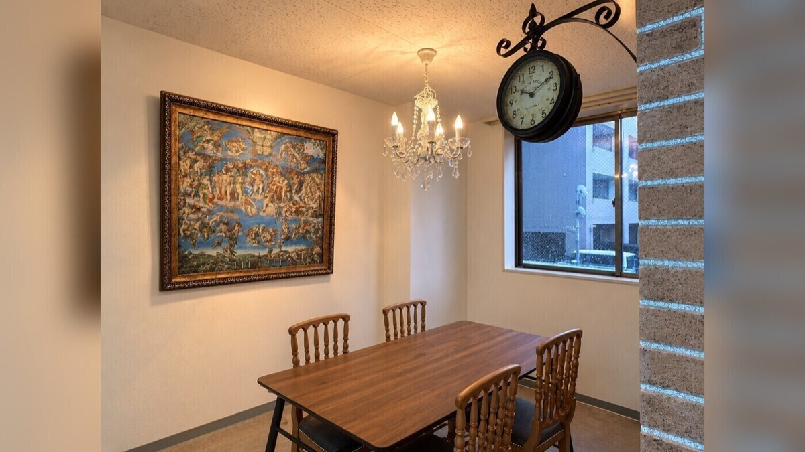

LICOの1日（月曜〜金曜）
- 朝 送迎車でお迎え（費用はかかりません）
- 10:00 到着・体調チェック・朝礼。今日の体調や気分を確認してから、作業を決めます。
- 午前 作業。動画編集、3Dプリンターでのものづくり、軽作業など。
- 12:00〜13:00 お昼・休憩。お弁当があるので、お昼ごはんの準備はいりません（1食250円）。ゆっくり休んで、午後にそなえます。
- 午後 作業
- 15:00 作業終了。今日1日を振り返って、送迎でお帰りです。

事業所の開所時間は9:00〜18:00、利用される方の活動時間は10:00〜15:00です。
無理をしない、が基本です
体調に波がある日は、作業の量を調整したり、休憩をこまめにとったりできます。「毎日通えるか不安」という方も、週に何日から始めるか一緒に相談しましょう。体調に波がある方の通い方はこちらの記事でもご紹介しています。
ひとりで抱えこまなくて大丈夫
困ったことや不安なことは、いつでもスタッフに話してください。定期的な面談でも、作業のことや体調のことをゆっくりお話しします。
送迎と在宅について
「一人で電車やバスに乗るのが不安」という方のために、送迎があります（費用はかかりません）。くわしい対象エリアや乗り降りする場所は、見学のときにご相談ください。また、パソコン作業は、在宅での利用もご相談いただけます（在宅利用の記事）。
「自分にも通えそうかな」と思ったら、まずは見学で、実際の雰囲気を感じてみてください。
作業の内容や時間など、状況によって変わります。くわしくは見学のときにご説明します。